Library › Topics › Money
Everything on money
Every money book the library keeps: earning it, keeping it, letting it compound, and not letting it wreck you - 58 free summaries, no paywall.
58 BOOKS · ALL FREE · AUDIO IN 26 LANGUAGES The Psychology of MoneyMorgan Housel · 2020Doing well with money is a soft skill: how you behave beats what you know. Every time.11 min · 8 lessons · free summary
The Psychology of MoneyMorgan Housel · 2020Doing well with money is a soft skill: how you behave beats what you know. Every time.11 min · 8 lessons · free summary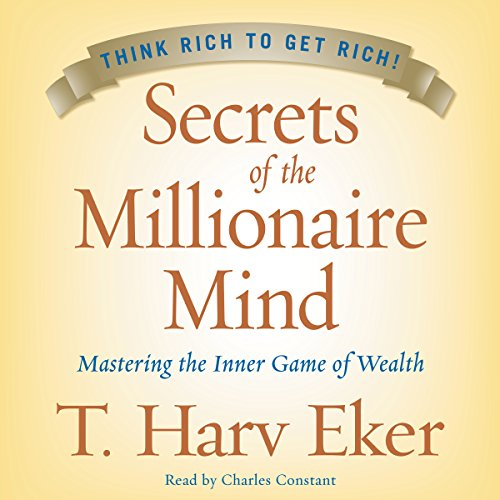
Secrets of the Millionaire MindT. Harv Eker · 2005Give me five minutes and I'll predict your financial future: it's your money blueprint - installed young, runn8 min · 6 lessons · free summary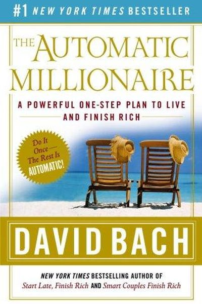
The Automatic MillionaireDavid Bach · 2003You don't need willpower - you need automation. Pay yourself first, automatically, and wealth builds itself.8 min · 6 lessons · free summary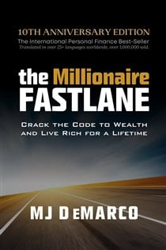
The Millionaire FastlaneMJ DeMarco · 2011The Slowlane trades your life for compound interest you'll enjoy at 70. The Fastlane builds systems whose math8 min · 6 lessons · free summary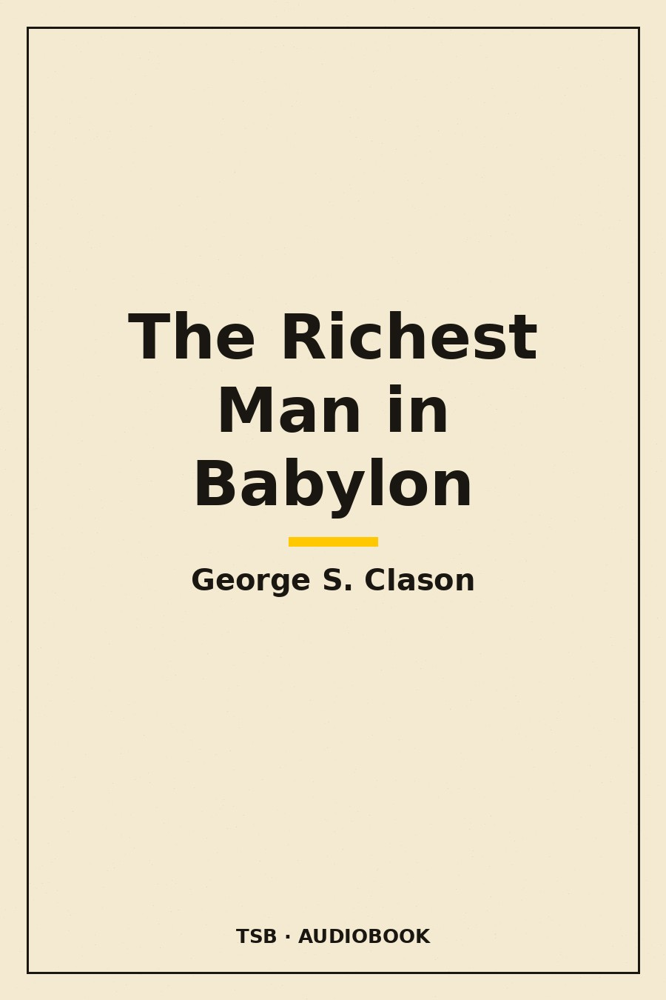
The Richest Man in BabylonGeorge S. Clason · 1926Pay yourself first: a part of all you earn is yours to keep. Everything else in personal finance is commentary9 min · 7 lessons · free summary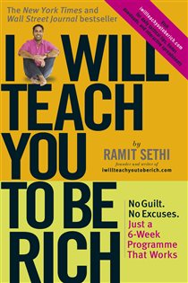
I Will Teach You to Be RichRamit Sethi · 2009Automate the system, win the big battles, and stop feeling guilty about lattes: spend lavishly on what you lov8 min · 6 lessons · free summary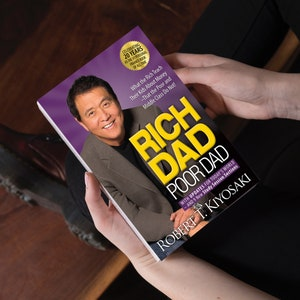
Rich Dad Poor DadRobert T. Kiyosaki · 1997The rich don't work for money - they make money work for them. The difference is financial education.12 min · 9 lessons · free summary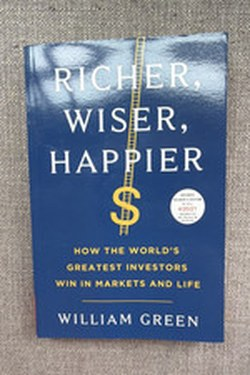
Richer, Wiser, HappierWilliam Green · 2021The best investors are not the smartest; they are the calmest - and their rules work for wealth and life alike7 min · 9 lessons · free summary The Art of Spending MoneyMorgan Housel · 2025Money is a tool for living a good life - not a scoreboard. Spending it well is a harder art than earning it.9 min · 7 lessons · free summary
The Art of Spending MoneyMorgan Housel · 2025Money is a tool for living a good life - not a scoreboard. Spending it well is a harder art than earning it.9 min · 7 lessons · free summary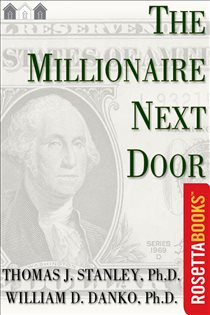
The Millionaire Next DoorThomas J. Stanley & William D. Danko · 1996Wealth is what you don't see: the millionaire drives a used sedan, budgets like an accountant, and out-saves e8 min · 6 lessons · free summary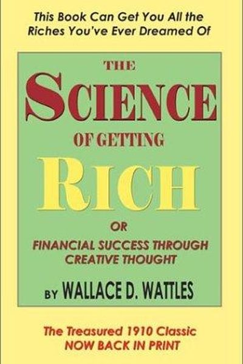
The Science of Getting RichWallace Wattles · 1910Wealth comes from thinking in a Certain Way + acting in a Certain Way - the original 'think and grow rich' blu8 min · 6 lessons · free summary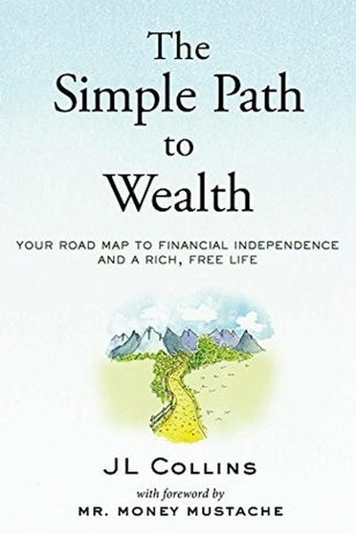
The Simple Path to WealthJL Collins · 2016Spend less than you earn, invest the rest in index funds, and let decades do the heavy lifting.8 min · 6 lessons · free summary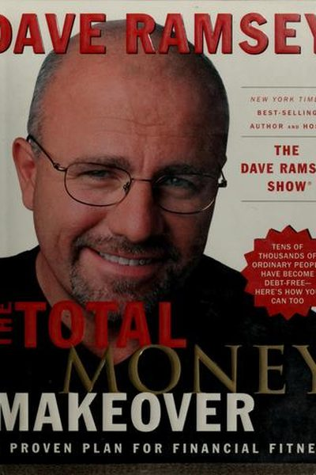
The Total Money MakeoverDave Ramsey · 2003Debt is dumb, cash is king. The 7 Baby Steps - from ₹ emergency fund to wealth building - are the plan.8 min · 6 lessons · free summary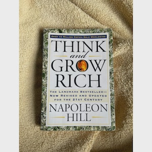
Think and Grow RichNapoleon Hill · 1937Whatever the mind can conceive and believe, it can achieve - if you back it with burning desire, faith, plans,12 min · 9 lessons · free summaryLet's Talk MoneyMonika Halan · 2018A no-jargon system for the Indian salaried household: emergency fund, term and health insurance, no-mix insura9 min · 10 lessons · free summary Money: Master the GameTony Robbins · 2014Financial freedom is a game with known rules: save aggressively, cut fees, diversify, and let time compound. P8 min · 6 lessons · free summary
Money: Master the GameTony Robbins · 2014Financial freedom is a game with known rules: save aggressively, cut fees, diversify, and let time compound. P8 min · 6 lessons · free summary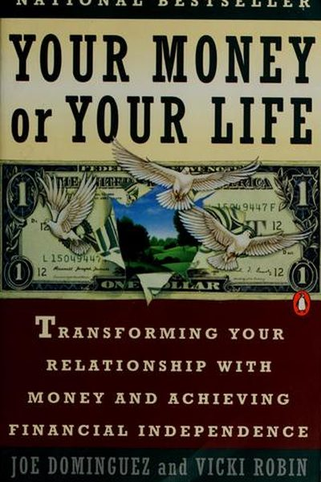
Your Money or Your LifeVicki Robin & Joe Dominguez · 1992Money is life energy. Every rupee you spend is hours of your life - spend accordingly.8 min · 6 lessons · free summary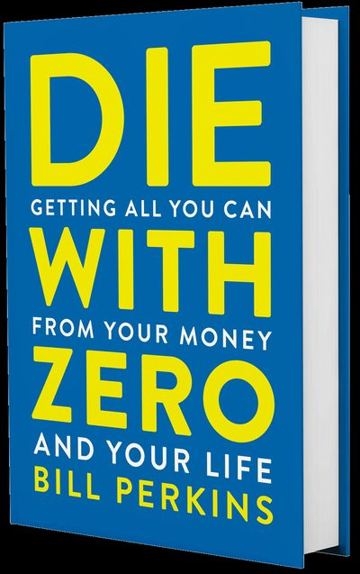
Die With ZeroBill Perkins · 2020Dying with money is dying with unlived life. Spend on experiences at the right age, give while alive, and aim 8 min · 6 lessons · free summary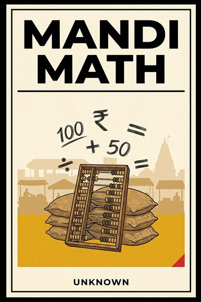
Mandi MathUnknown · 2026Ten lessons in money from India's markets: price discovery by conversation, credit by community, and the daily11 min · 10 lessons · free summary The Almanack of Naval RavikantEric Jorgenson · 2020Seek wealth, not money: assets that earn while you sleep. And happiness is a skill you can learn, like coding.8 min · 6 lessons · free summary
The Almanack of Naval RavikantEric Jorgenson · 2020Seek wealth, not money: assets that earn while you sleep. And happiness is a skill you can learn, like coding.8 min · 6 lessons · free summary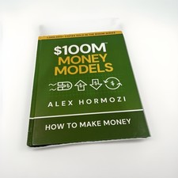
$100M Money ModelsAlex Hormozi · 2025Get every customer to pay for the next one. If gross profit in 30 days covers acquisition cost, growth becomes9 min · 7 lessons · free summary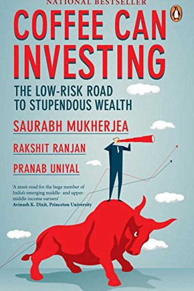
Coffee Can InvestingSaurabh Mukherjea · 2018Saurabh Mukherjea shows how buying a handful of high-quality Indian companies and holding them for a decade cr9 min · 7 lessons · free summary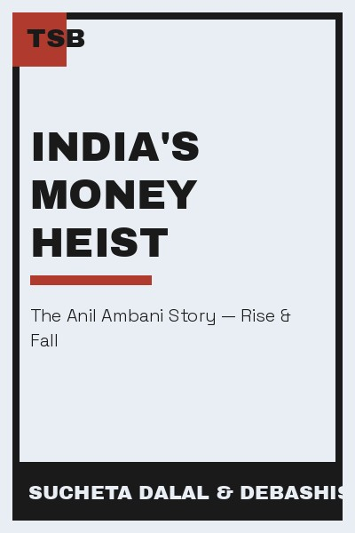
India's Money HeistSucheta Dalal & Debashish Basu · 2019India's most famous financial journalists dissect how Anil Ambani's empire borrowed, expanded and imploded - a8 min · 6 lessons · free summary Nudge: Improving Decisions About Health, Wealth, and HappinessRichard Thaler & Cass Sunstein · 2008You can't stop being human - but you can design your environment so being human leads you the right way.8 min · 6 lessons · free summaryOne Up on Wall StreetPeter Lynch · 1989You already know more than the experts about the companies you use daily. Buy what you know - after doing the 8 min · 6 lessons · free summary
Nudge: Improving Decisions About Health, Wealth, and HappinessRichard Thaler & Cass Sunstein · 2008You can't stop being human - but you can design your environment so being human leads you the right way.8 min · 6 lessons · free summaryOne Up on Wall StreetPeter Lynch · 1989You already know more than the experts about the companies you use daily. Buy what you know - after doing the 8 min · 6 lessons · free summary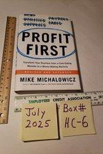
Profit FirstMike Michalowicz · 2014Sales − Profit = Expenses. Take profit FIRST, hide it, and let the business survive on what remains - because 8 min · 6 lessons · free summary The Behavior GapCarl Richards · 2012The biggest risk in your portfolio is you. Simple rules - plan, automate, simplify - close the behavior gap.8 min · 6 lessons · free summary
The Behavior GapCarl Richards · 2012The biggest risk in your portfolio is you. Simple rules - plan, automate, simplify - close the behavior gap.8 min · 6 lessons · free summary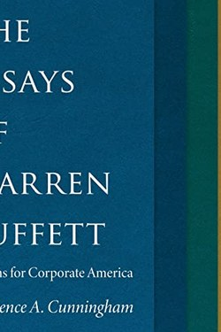
The Essays of Warren BuffettLawrence A. Cunningham (ed.) · 2001Own wonderful businesses, ignore the market's moods, and let compounding do the impossible.7 min · 9 lessons · free summary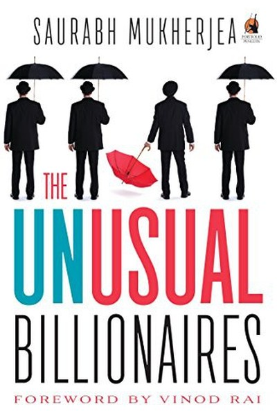
The Unusual BillionairesSaurabh Mukherjea · 2018Saurabh Mukherjea decodes India's greatest long-term wealth creators and the six filters that separate them fr8 min · 6 lessons · free summary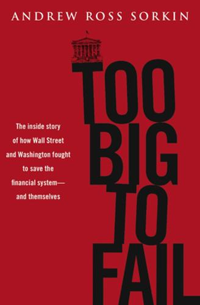
Too Big to Fail: The Inside Story of How Wall Street and Washington Fought to Save the Financial SystemAndrew Ross Sorkin · 2009Sorkin's minute-by-minute chronicle of the 2008 crisis: Bear, Lehman, AIG, Merrill, WaMu and TARP, the deals, 12 min · 8 lessons · free summary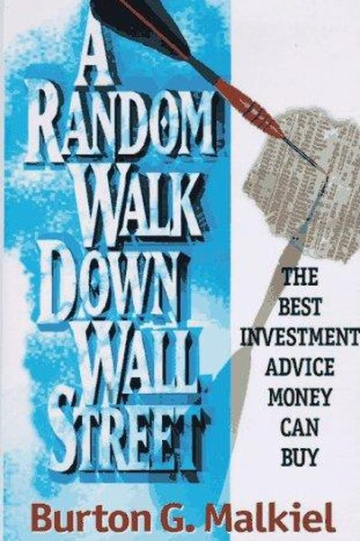
A Random Walk Down Wall StreetBurton Malkiel · 1973Stock prices move like a random walk - nobody can predict them. So stop trying: buy the whole market and hold.8 min · 6 lessons · free summary AntifragileNassim Nicholas Taleb · 2012Beyond resilience: don't just survive shocks - design your life so volatility, stress, and chaos make you bett8 min · 6 lessons · free summary
AntifragileNassim Nicholas Taleb · 2012Beyond resilience: don't just survive shocks - design your life so volatility, stress, and chaos make you bett8 min · 6 lessons · free summary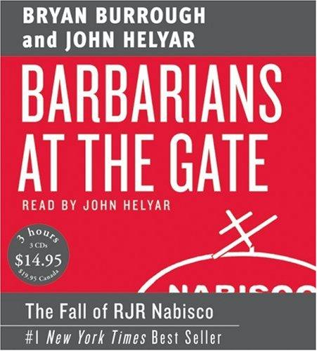
Barbarians at the Gate: The Fall of RJR NabiscoBryan Burrough and John Helyar · 1990The definitive chronicle of the RJR Nabisco LBO: Ross Johnson's jet-set boardroom, the Premiere fiasco, the fe12 min · 8 lessons · free summary Breakout Nations: In Pursuit of the Next Economic MiraclesRuchir Sharma · 2012A top emerging-markets investor's field guide to spotting which economies will keep growing and which are one 12 min · 8 lessons · free summary
Breakout Nations: In Pursuit of the Next Economic MiraclesRuchir Sharma · 2012A top emerging-markets investor's field guide to spotting which economies will keep growing and which are one 12 min · 8 lessons · free summary Common Stocks and Uncommon ProfitsPhilip A. Fisher · 1958Buy exceptional growth companies and hold them for decades: Fisher's 15 points, the scuttlebutt research metho10 min · 10 lessons · free summary
Common Stocks and Uncommon ProfitsPhilip A. Fisher · 1958Buy exceptional growth companies and hold them for decades: Fisher's 15 points, the scuttlebutt research metho10 min · 10 lessons · free summary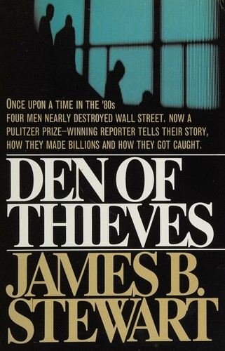
Den of ThievesJames B. Stewart · 1991The definitive narrative of 1980s insider trading: how Dennis Levine's yacht-bought lifestyle unraveled a netw12 min · 8 lessons · free summary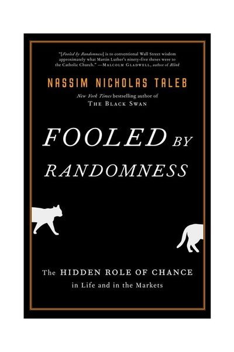
Fooled by RandomnessNassim Nicholas Taleb · 2001Luck wears a suit and calls itself skill. Learn to tell them apart before you copy the wrong person - or becom8 min · 6 lessons · free summary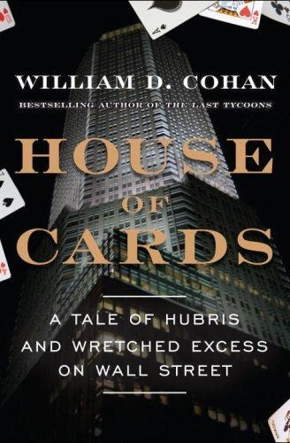
House of Cards: A Tale of Hubris and Wretched Excess on Wall StreetWilliam D. Cohan · 2009Cohan's history of Bear Stearns from 1923 scrappiness to subprime collapse, tracing how a culture of trading s12 min · 8 lessons · free summary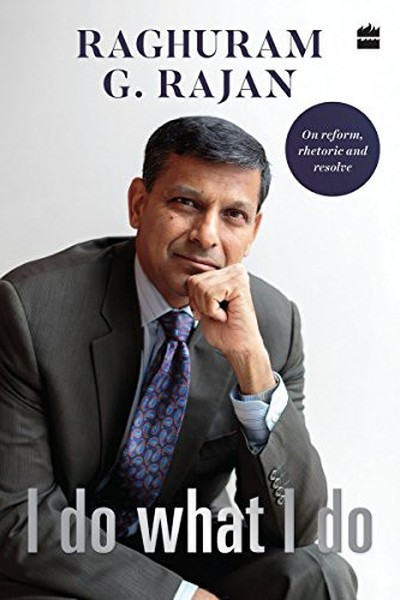
I Do What I DoRaghuram Rajan · 2017Raghuram Rajan's speeches from his RBI tenure - fighting inflation, cleaning up bad loans and saying no to the8 min · 6 lessons · free summary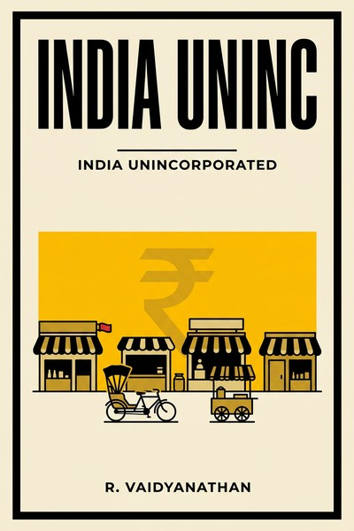
India Unincorporated: The Untold Story of India's Invisible EntrepreneursR. Vaidyanathan · 2014An economist's case that India's real economy is the unincorporated sector (self-employed, traders, tiny manuf10 min · 8 lessons · free summary Letters from a StoicSeneca · 65Seneca's letters to his friend Lucilius are a masterclass in the art of living - how to use time, handle wealt9 min · 7 lessons · free summary
Letters from a StoicSeneca · 65Seneca's letters to his friend Lucilius are a masterclass in the art of living - how to use time, handle wealt9 min · 7 lessons · free summary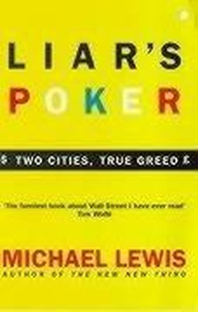
Liar's PokerMichael Lewis · 1989Michael Lewis's memoir of Salomon Brothers in the 1980s: the training program, the mortgage desk's rise, the c10 min · 8 lessons · free summaryPoor Charlie's AlmanackCharlie Munger · 2005Take a simple idea and take it seriously: build a latticework of mental models, invert every problem, and avoi8 min · 6 lessons · free summary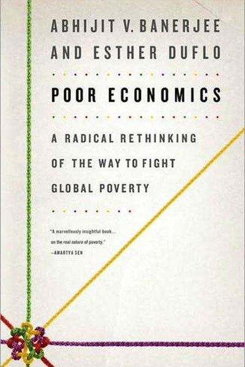
Poor EconomicsAbhijit V. Banerjee & Esther Duflo · 2011Nobel-winning economists Banerjee and Duflo show that poverty is a set of solvable everyday problems - and tha9 min · 7 lessons · free summary Same as EverMorgan Housel · 2023You can't predict what will change - so build everything on what won't: greed, fear, envy, stories, and the co8 min · 6 lessons · free summary
Same as EverMorgan Housel · 2023You can't predict what will change - so build everything on what won't: greed, fear, envy, stories, and the co8 min · 6 lessons · free summary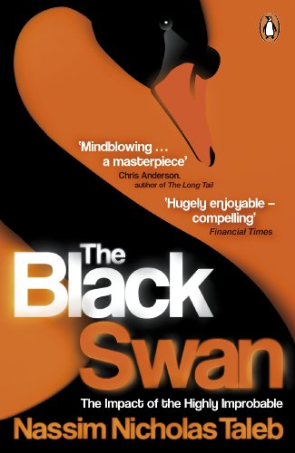
The Black SwanNassim Nicholas Taleb · 2007The biggest events are unpredicted by construction. Stop forecasting; start building antifragility - and posit8 min · 6 lessons · free summary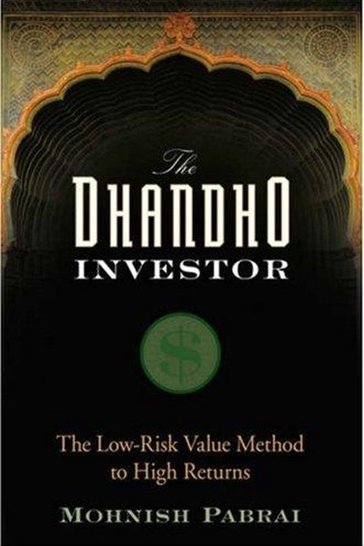
The Dhandho InvestorMohnish Pabrai · 2007Mohnish Pabrai distills value investing into Dhandho: low-risk bets with high upside, copied from proven maste9 min · 7 lessons · free summary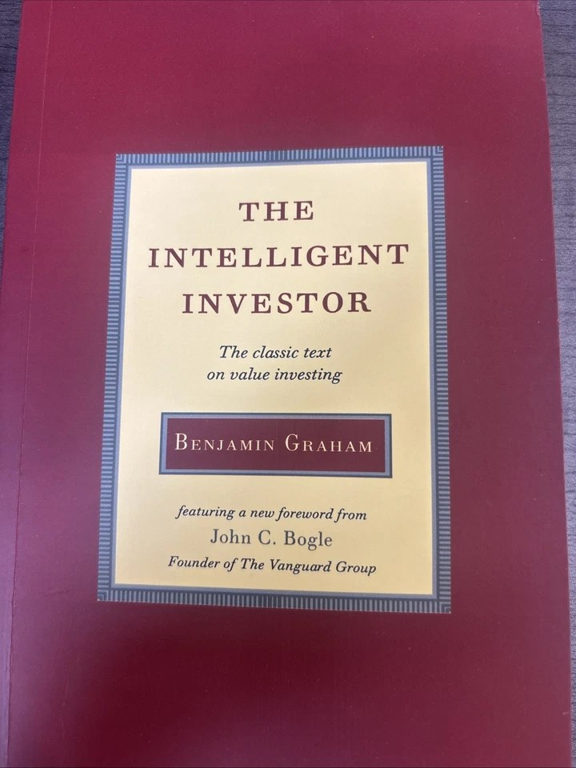
The Intelligent InvestorBenjamin Graham · 1949The investor's chief problem - and even his worst enemy - is likely to be himself. Buy value, demand a margin 8 min · 6 lessons · free summary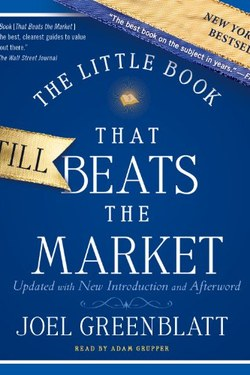
The Little Book That Beats the MarketJoel Greenblatt · 2005Quality (return on capital) plus price (earnings yield) together beat both halves alone - the formula of formu7 min · 9 lessons · free summary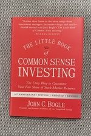
The Little Book of Common Sense InvestingJohn C. Bogle · 2007Don't look for the needle in the haystack. Buy the haystack. Costs are the one thing you control - and the one8 min · 6 lessons · free summary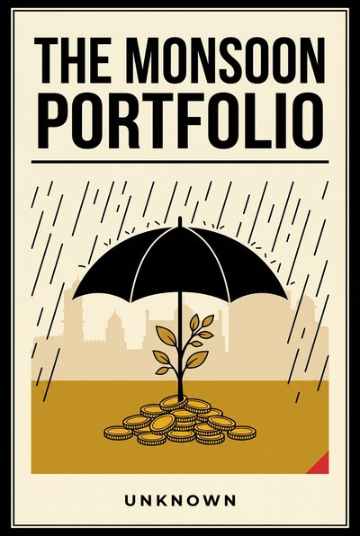
The Monsoon PortfolioUnknown · 2026Buffer stocks, flexible loans, natural hedges and pre-written pivots: the quiet architecture of resilience, ta11 min · 10 lessons · free summary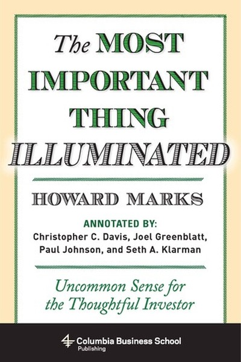
The Most Important ThingHoward Marks · 2011Investing is not about predicting the future - it's about thinking better than the crowd and surviving long en8 min · 6 lessons · free summary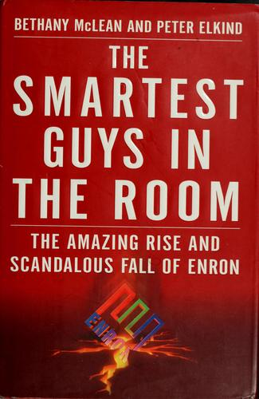
The Smartest Guys in the Room: The Amazing Rise and Scandalous Fall of EnronBethany McLean and Peter Elkind · 2003The definitive history of Enron: mark-to-market fantasy, SPE shadow banking, a culture of smartest-guy arrogan12 min · 8 lessons · free summary The Snowball: Warren Buffett and the Business of LifeAlice Schroeder · 2008Life is a snowball: find wet snow and a long hill. Then protect your reputation - it's all you have.8 min · 6 lessons · free summary
The Snowball: Warren Buffett and the Business of LifeAlice Schroeder · 2008Life is a snowball: find wet snow and a long hill. Then protect your reputation - it's all you have.8 min · 6 lessons · free summary The Three Thousand StitchesSudha Murty · 2019From a childhood of modest means to founding India's biggest philanthropy, Murty shows that character, not mon7 min · 10 lessons · free summary
The Three Thousand StitchesSudha Murty · 2019From a childhood of modest means to founding India's biggest philanthropy, Murty shows that character, not mon7 min · 10 lessons · free summary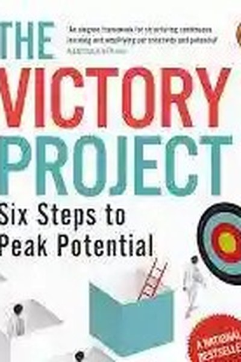
The Victory ProjectSaurabh Mukherjea · 2019Mukherjea's framework for elite performance: six stages - goal setting, strategy, execution, review, adaptatio8 min · 6 lessons · free summary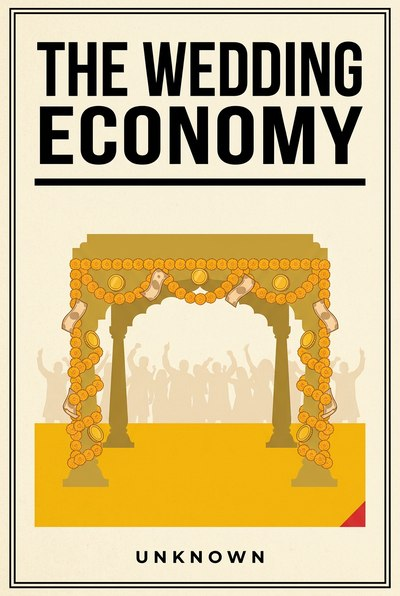
The Wedding EconomyUnknown · 2026How India's wedding machine actually works, what it teaches about aspiration pricing, seasonal spikes, deposit11 min · 10 lessons · free summary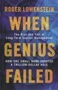
When Genius Failed: The Rise and Fall of Long-Term Capital ManagementRoger Lowenstein · 2000The definitive chronicle of LTCM: how the smartest fund in history converted intellect into leverage and lever12 min · 8 lessons · free summaryEvery summary free. Mark lessons as read, listen in your language, share quote cards.